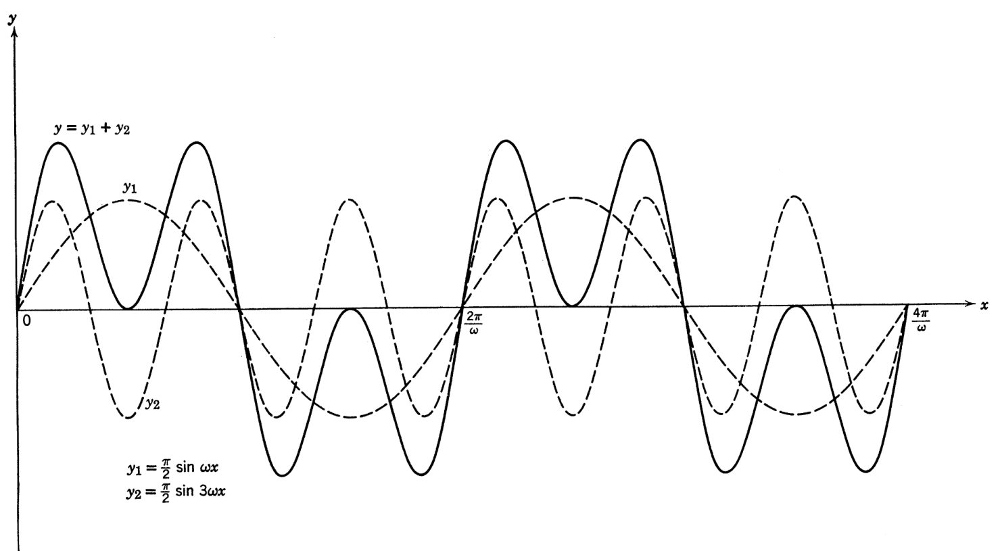
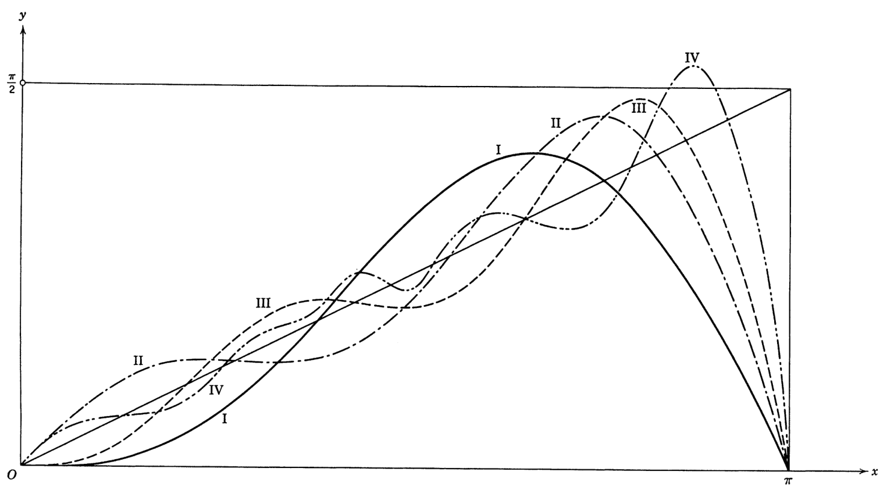
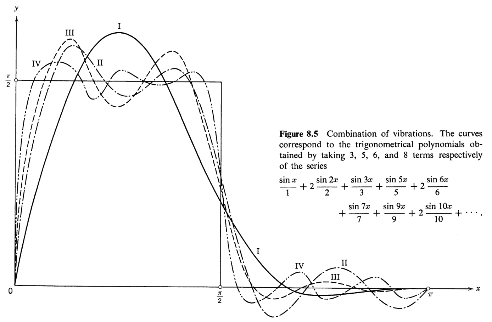
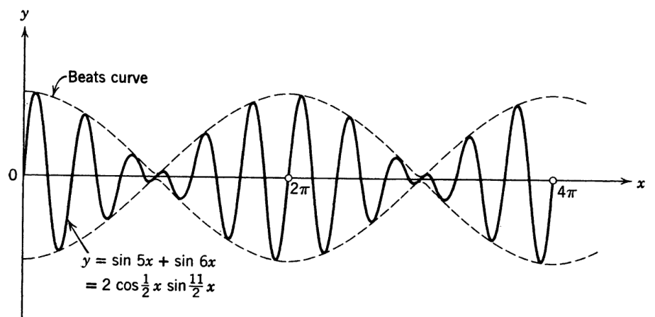

a. 谐波。三角多项式
许多振动是纯正弦振动（见第 405 页），但多数周期运动更为复杂，由几个正弦振动“叠加”而成。用数学语言说，点在直线上的坐标 x x x
叠加角频率分别为 ω 1 , ω 2 \omega_1,\omega_2 ω 1 , ω 2 ω 1 / ω 2 \omega_1/\omega_2 ω 1 / ω 2 ω 2 = 2 ω 1 \omega_2=2\omega_1 ω 2 = 2 ω 1 2 π / ( 2 ω 1 ) = T 2 = T 1 / 2 2\pi/(2\omega_1)=T_2=T_1/2 2 π / ( 2 ω 1 ) = T 2 = T 1 /2 T 1 T_1 T 1 T 1 T_1 T 1 基振动 ）的两倍，周期为其一半，称为它的第一泛音 。
同样，若再引入角频率为 ω 3 = 3 ω 1 \omega_3=3\omega_1 ω 3 = 3 ω 1 sin 3 ω 1 x \sin3\omega_1x sin 3 ω 1 x T 1 = 2 π / ω 1 T_1=2\pi/\omega_1 T 1 = 2 π / ω 1 n − 1 n-1 n − 1 ω 4 = 4 ω 1 , ω 5 = 5 ω 1 , … , ω n = n ω 1 \omega_4=4\omega_1,\ \omega_5=5\omega_1,\ldots,\omega_n=n\omega_1 ω 4 = 4 ω 1 , ω 5 = 5 ω 1 , … , ω n = n ω 1 T 1 T_1 T 1 ω 1 \omega_1 ω 1 T 1 = 2 π / ω 1 T_1=2\pi/\omega_1 T 1 = 2 π / ω 1 n − 1 n-1 n − 1 三角多项式 形式的周期函数
S n ( x ) = a 0 2 + ∑ ν = 1 n ( a ν cos ν ω x + b ν sin ν ω x ) . (6)
S_n(x)=\frac{a_0}{2}+\sum_{\nu=1}^n(a_\nu\cos\nu\omega x+b_\nu\sin\nu\omega x).\tag{6}
S n ( x ) = 2 a 0 + ν = 1 ∑ n ( a ν cos ν ω x + b ν sin ν ω x ) . ( 6 ) 常数 a 0 / 2 a_0/2 a 0 /2 2 n + 1 2n+1 2 n + 1

图 8.3 振动的合成，图中比例按 ω=1 绘制 
图 8.4 振动的合成 图 8.4 中，I 是 sin x − ( sin 2 x ) / 2 \sin x-(\sin2x)/2 sin x − ( sin 2 x ) /2 ( sin 3 x ) / 3 (\sin3x)/3 ( sin 3 x ) /3 ( sin 4 x ) / 4 (\sin4x)/4 ( sin 4 x ) /4 ( sin 5 x ) / 5 − ( sin 6 x ) / 6 + ( sin 7 x ) / 7 (\sin5x)/5-(\sin6x)/6+(\sin7x)/7 ( sin 5 x ) /5 − ( sin 6 x ) /6 + ( sin 7 x ) /7

图 8.5 振动的合成，曲线分别取以下级数的前 3、5、6、8 项 sin x 1 + 2 sin 2 x 2 + sin 3 x 3 + sin 5 x 5 + 2 sin 6 x 6 + sin 7 x 7 + sin 9 x 9 + 2 sin 10 x 10 + ⋯ .
\frac{\sin x}1+2\frac{\sin2x}2+\frac{\sin3x}3+\frac{\sin5x}5
+2\frac{\sin6x}6+\frac{\sin7x}7+\frac{\sin9x}9+2\frac{\sin10x}{10}+\cdots .
1 sin x + 2 2 sin 2 x + 3 sin 3 x + 5 sin 5 x + 2 6 sin 6 x + 7 sin 7 x + 9 sin 9 x + 2 10 sin 10 x + ⋯ . “谐波”一词来自声学。角频率 ω \omega ω
原注 1（第 577 页） 声学中也用 overtone （泛音）这个词。
译者注 这里沿原书的次序把基频的两倍称作第一泛音、三倍称作第二泛音。按现代常用的“第几次谐波”计数，基频本身是一次谐波，基频的两倍是二次谐波。
一般来说，若有限个被叠加的角频率的比都是有理数，就能把它们都写成某一共同基频的整数倍。若两个振动的角频率 ω 1 , ω 2 \omega_1,\omega_2 ω 1 , ω 2 概周期函数 。
*b. 拍
最后再谈正弦振动叠加时出现的拍 。设两个振动的振幅都为 1 1 1 ω 1 , ω 2 \omega_1,\omega_2 ω 1 , ω 2 ξ \xi ξ
y = sin ω 1 x + sin ω 2 x , ω 1 > ω 2 > 0.
y=\sin\omega_1x+\sin\omega_2x,\qquad \omega_1>\omega_2>0.
y = sin ω 1 x + sin ω 2 x , ω 1 > ω 2 > 0. 由熟知的三角公式，
y = 2 cos [ 1 2 ( ω 1 − ω 2 ) x ] sin [ 1 2 ( ω 1 + ω 2 ) x ] .
y=2\cos[\tfrac12(\omega_1-\omega_2)x]\sin[\tfrac12(\omega_1+\omega_2)x].
y = 2 cos [ 2 1 ( ω 1 − ω 2 ) x ] sin [ 2 1 ( ω 1 + ω 2 ) x ] . 这可看作角频率为 1 2 ( ω 1 + ω 2 ) \tfrac12(\omega_1+\omega_2) 2 1 ( ω 1 + ω 2 ) 4 π / ( ω 1 + ω 2 ) 4\pi/(\omega_1+\omega_2) 4 π / ( ω 1 + ω 2 ) x x x 2 cos [ 1 2 ( ω 1 − ω 2 ) x ] 2\cos[\tfrac12(\omega_1-\omega_2)x] 2 cos [ 2 1 ( ω 1 − ω 2 ) x ] 4 π / ( ω 1 − ω 2 ) 4\pi/(\omega_1-\omega_2) 4 π / ( ω 1 − ω 2 ) ω 1 , ω 2 \omega_1,\omega_2 ω 1 , ω 2

图 8.6 拍 大家在声学和电子学中都熟悉这种现象。无线电传输中，ω 1 , ω 2 \omega_1,\omega_2 ω 1 , ω 2 ω 1 − ω 2 \omega_1-\omega_2 ω 1 − ω 2
译者注 书中“振幅”允许取负值。若只看响度的强弱，就要取这个缓变因子的绝对值，因而相邻两个强拍相隔 2 π / ( ω 1 − ω 2 ) 2\pi/(\omega_1-\omega_2) 2 π / ( ω 1 − ω 2 )